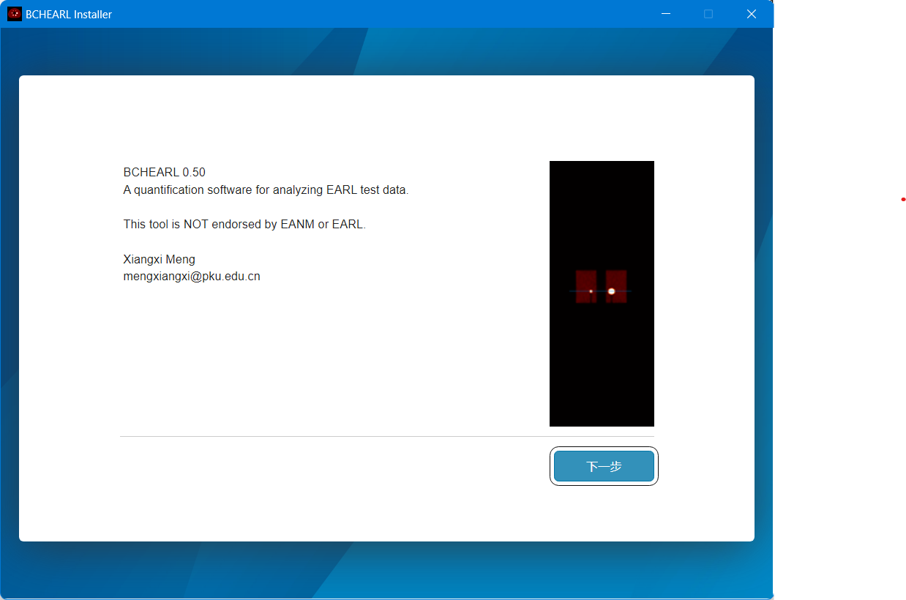
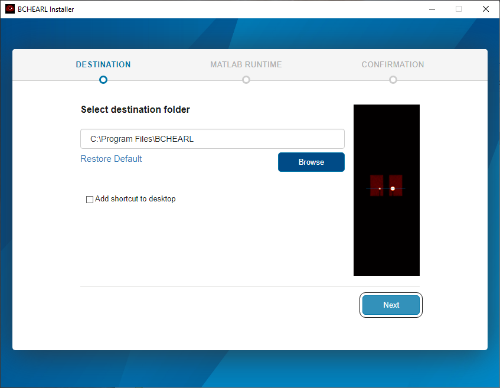
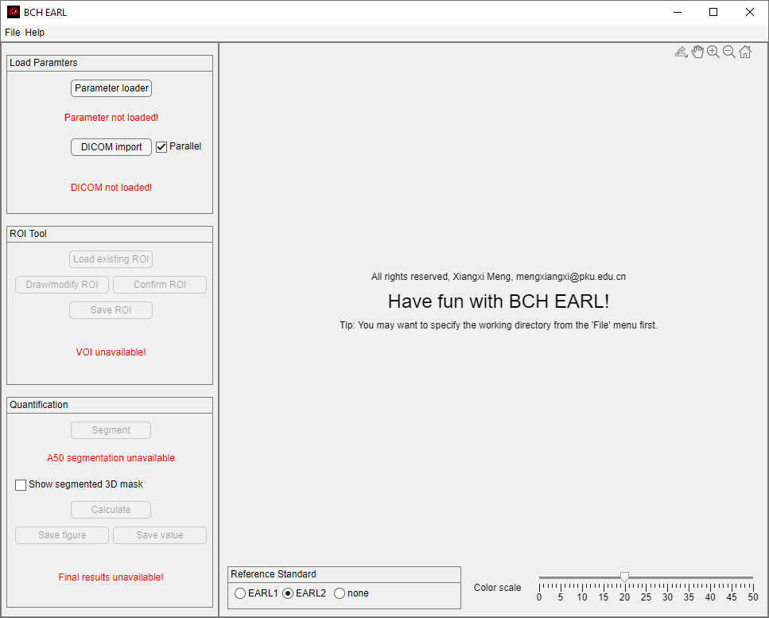
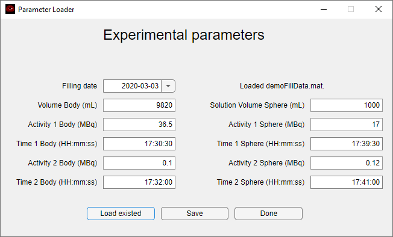

User guide ¶
Installing ¶
BCH EARL is distributed through Windows executable files.

The current version is developed by MATLAB App Designer, thus it requires a MATLAB runtime of a certain version.
Offline installation
By default, the (high quality) internet connection is required to download the MATLAB runtime. When installing offline, you may need to prepare the corresponding runtime manually and specify the runtime folder.

Apart from this, the installation process shall be smooth.
Calculating with GUI ¶
Upon successful installation, you can see run the application.

The Menu is on the top. Below it are two panels. The Left Panel contains several groups that go through the whole workflow, namely Load Parameters, ROI Tool, and the Quantification. The Right Panel conatins the Figure Area, the Reference Standard Option, and the Color Scale.
Specify the working directory ¶
It is highly recommended to set the working directory before each run. To do so, use the menu File>Specify working directory.
Refreshing the program will set the working directory back to default. The default directory is %UserProfile%\Documents\MATLAB.
Specify the phantom filling parameters ¶
To specify the filling doses, filling volumes and filling times, press Parameter loader to start a new app window.

If strictly adhered to the official BCH EARL imaging protocol (to be released later) and used the official record form (to be released later), the items shall be readily at hand. Otherwise, you may need to make some compromise.
Once provided all necessary data, you may press Done to accept the values. Or you can Save the data to a .mat binary file, to be later loaded using the Load existed button. This binary file can also be used in the task file.
Import the DICOM series ¶
You can adjust the Color scale on the lower right corner of the right panel. The effect of the color scale is universal.
Obtain a preliminary ROI ¶
Segment and calculate the RCs ¶
Export the results ¶
Gaussian filtering ¶
Calculating with task file ¶
Other functions ¶
Parallel ¶
The parallel computing function is provided through MATLAB. Generally, this feature may accelerate the loading and saving of multiple DICOM files. However, there are some side effects.
Risks of parallel
- The starting of the parallel pool can be very slow.
- The memory management of parallel has bugs.
Refresh ¶
File>Refresh will refresh the program, setting most functions and variables to the default status.
The Parallel check box is not affected.
Free RAMs
Due to a problem with the parallel feature of MATLAB, the RAM may not be able to be freed without restarting the program. Refreshing the program will not help to release the RAM in such cases.
About ¶
Help>About prints the information about the program, including the license.
Help ¶
Help>Help points to the help page for this program.